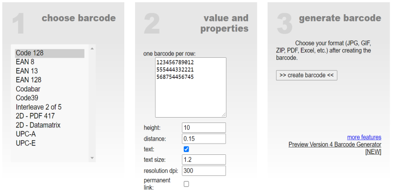

Online Barcode Generator
Create your own barcodes. You can print or save as JPG, GIF, ZIP or PDF. Your barcode is free of charge and quickly generated. It´s easy.



Create your own barcodes. You can print or save as JPG, GIF, ZIP or PDF. Your barcode is free of charge and quickly generated. It´s easy.
Remove backgrounds 100% automatically in 5 seconds with zero clicks There are approximately 20 million more interesting activities than removing backgrounds by hand. Thanks to remove.bg's clever AI, you can slash editing time - and have more fun!.

diagrams.net is an open source technology stack for building diagramming applications, and the world’s most widely used browser-based end-user diagramming software.
provide free, high quality diagramming software for everyone